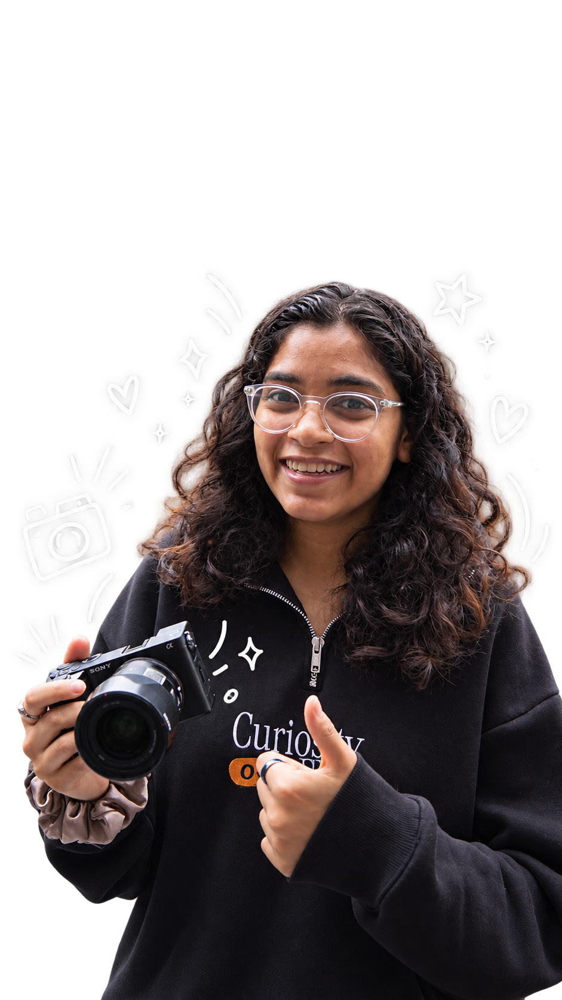

Strategy & Brand
I turn a brief, problem or early idea into a clearer direction.
- Creative Strategy
- Campaign Planning
- Consumer Research
- Performance Marketing
Creative strategist · Brand · Community · Founder’s office
And build the systems that help them grow.

Selected collaborators
A little about me
I enjoy working across strategy, content, operations and execution to help ideas take shape.
My work can move from building a campaign to shooting a video, planning an event, improving a system or figuring out how to bring the right people together.
When I’m not working, I’m probably in the mountains, talking too much about something I like, or planning a 10K my brain is convinced I can finish in an hour.
More about me →Skills & expertise
I turn a brief, problem or early idea into a clearer direction.
I help ideas move from a thought on paper to something people can see and feel.
I work across people, platforms and details to keep things moving.
Tools
A peek into my work
Marketplace and social media operations for a family stationery and gifting business.
02 / CREATIVE STRATEGYAsanA brand proposal focused on Gen Z awareness and sales.
03 / COMMUNITYStargazing MumbaiSocial content and live event support for stargazing experiences.
04 / CREATIVE STRATEGYSports YardOn-ground consumer research before making brand recommendations.
Whether you have an idea, a project, a problem to solve, or simply want to say hello, I’d love to hear from you.